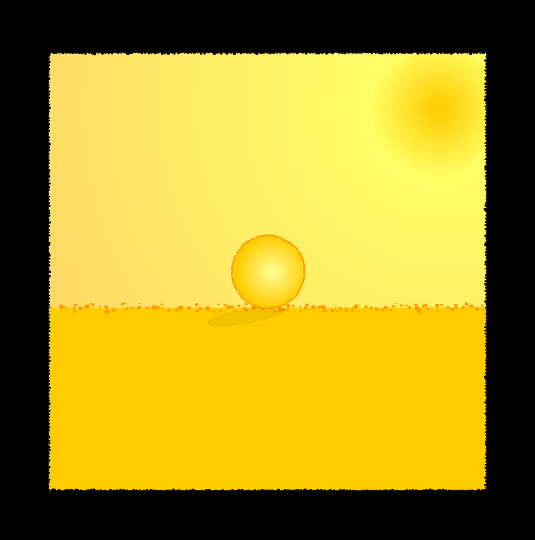

Game Audio Bundle MP3
March 2018
I downloaded Soniss's 76GB of public domain sounds effects in WAV, and converted them into 128kbps MP3s (2.5GB)
Website
Ask me anything
July 2015 - June 2016
I answer to all your questions on Github!
Website
Nice questions:
- How did you get into codegolfing and why?
- What was your best programming moment?
The Codegolf Team also answers all your questions on Reddit!
Website
LOL
2011 - WIP
Warning: dark / nsfw humor!
A compilation of funniest / craziest images of the Web. Most are in english, a few are in french.
WatchI also collect r/jokes since 2017
3DShomebrew
october 2014 - WIP
I'm writing a tutorial and a toolset to help people develop homebrews for Nintendo 3DS.
Website
Tutorial
WiiU FPS
july 2014 - WIP
I'm the lead programmer of a WiiU indie game developed by a team of four people and published by Goodbye Galaxy Games. It's an old-style fast-paced FPS, to be released later.
The game is developed with Unity3D, and coded in UnityScript (based on JavaScript).

More info
Fruit carving
september 2014
My first attempt at fruit carving, with a tiny watermelon

Karoshi DS
2010
A Nintendo DS homebrew based on the famous Karoshi series. Developed with Jesse Venbrux for a 2010 DS homebrew competition hosted by Nintendomax. It's just a demo. You can play it on an emulator or on real hardware with a NDS flashcard.
It's coded in C using the PAlib homebrew library.
More info
Download
Easy classic flash game
2010
A musical flash game about a ball that has to avoid many traps (beta)

play (swf)
download (exe)
Polytech-o-scan
2010
A flash game that I made at university. The goal is to recognize shapes as they pass through a small hole on the screen. (it's in french though)

play (swf)
download (exe)
My university's lipdub
2009
I filmed the 2009 lipdub for my school "Polytech'Nice Sophia", featuring more than 80 actors! It won the french universities' lipdub reward in 2010.
LipDub Polytech'Nice Sophia - I Gotta Feeling from Hugo Dupras on Vimeo.
I also made a little gag reel video:
Mini Betisier du lipdub Polytech Sophia... par xema87